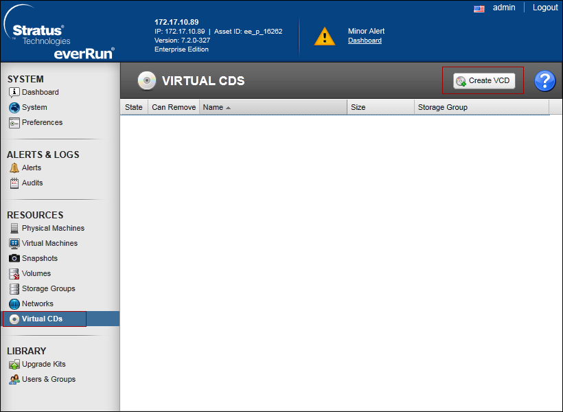
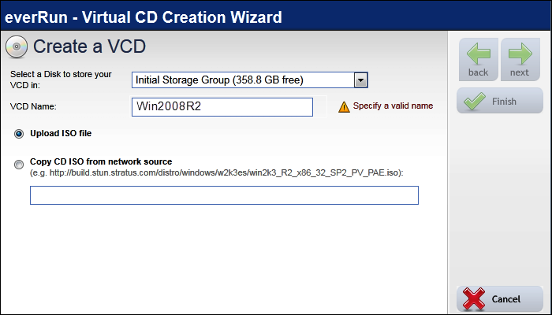
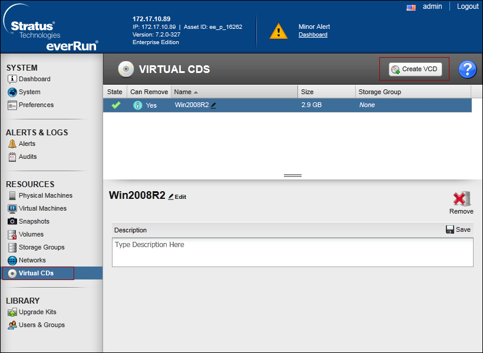

Create Virtual CD
To create a VCD, use the Virtual CD Creation Wizard to copy an ISO file to a storage device on the everRun system. Thereafter, you can boot from it.
See the Booting from a Virtual CD section of the everRun’s User’s Guide to install a guest operating system or start a VM from a bootable recovery VCD.
NOTE 1: You cannot use VCDs to install applications in virtual machine. If necessary, mount a network drive or ISO image in the guest operating system to access application media.
NOTE 2: Each VCD consumes disk space in the storage group in which it is stored. Unless you use a VCD on a regular basis, remove it when it is no longer needed.
NOTE 3: If you create a bootable VCD for installation, it must be a single CD or DVD. Multiple CDs or DVDs are not supported.
- If necessary, create ISO files of any physical media for which you will create VCDs.
- Open the Virtual CDs page in the everRun Availability Console.

- Click Create VCD.

- In the Virtual CD Creation Wizard window, select a storage group with sufficient free space for the VCD.
- Enter a name for the VCD.
- Select a source for the VCD from the following options:
- Upload ISO file uploads a file from your remote system running the everRun Availability Console.
- Copy CD ISO from network source copies the file from a web URL.
- If you selected Upload ISO file, click Next and select the ISO file to upload.
- Click Finish to upload or copy the ISO file from the specified source.
- The Virtual CD Creation Wizard reports that the VCD has been successfully added, but transferring the image may take several more minutes depending on the size of the image. You can determine the status of a VCD by checking the State column on the Virtual CDs page:
a) A syncing icon indicates that the VCD is still being created.
b) A broken icon indicates that the VCD creation failed. Remove the VCD and try creating it again.
c) A normal icon indicates that the transfer is complete and that the VCD is ready to use.
